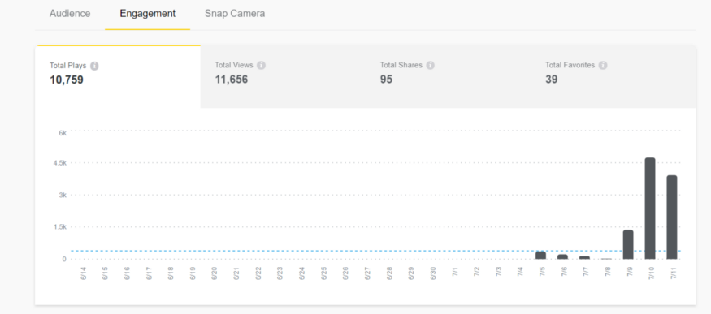
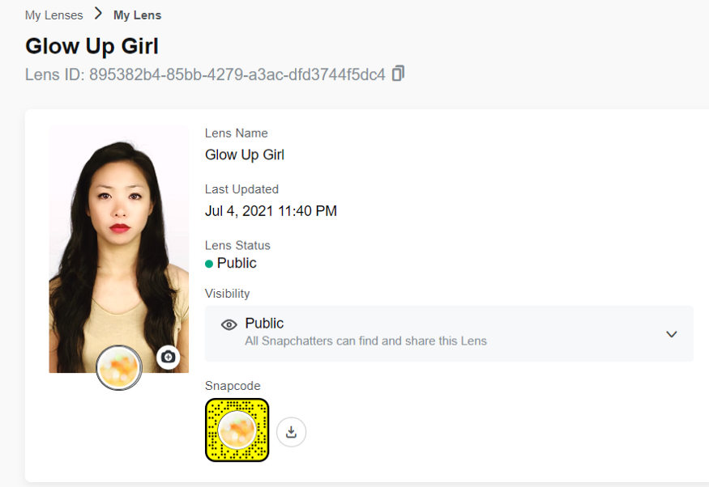
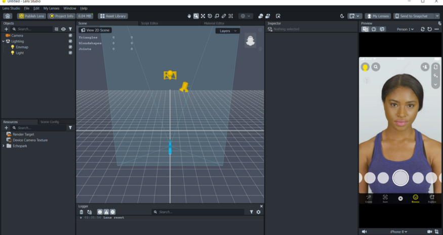

How my Snapchat Lenses got trending in 7 days?
Hola folks! In this blog, I will be talking about my recent experience, when I started to explore the Snapchat Lenses section. In fact, on 11th July, I got my Lenses trending on Snapchat with 10K+ views (it became 11K now 😁).
Snapchat Inc. mainly aims to contribute by empowering people to express themselves, live in the moment, learn about the world and have fun. And with that, the great and the most fascinating thing about Snapchat is its filers/lenses collection. Lens Studio is a real-time tool by Snapchat for creating Lenses. It allows you to create both Face Lenses (front camera) and World Lenses (rear camera).
So, basically Glow Up Girl is the name of my Snapchat Filter, even you can try it by searching or I will be providing the details below.
As you can see here, I published it on 4th July, with not so much prior experience of Lens Studio. If you are familiar with the softwares like Maya, Cinema4D, Blender, 3ds Max, then trust me, this will be a piece of cake for you.
All the creators, from 3D professionals to Photoshop hobbyists, can create their own customized Lens through this. Even it offers a number of Templates to get your hands on it from the start.
I didn't choose any template at first, I just wanted to explore the tools of this software so I clicked on the “Open a New Project” button.
This will be the workspace where you will be navigated after opening the new project. If you are here for the first time, a short tutorial of making a Birthday Countdown Lense will be provided to you as well for getting familiar with the platform. Now I will explain to you about the Lenses section in accordance with the different domains.
Several kinds of Lenses can be made with different features in it. Some are for Face Effects, VFX Editors, Material Editors (how shaders work), others use Machine Learning (SnapML) or maybe some are modifications of the templates available. The past part of this is Scripting API (Lens Studio’s JavaScript API). Lens Studio itself provides a scripting engine for creating rich interactive experiences. With the help of scripts, your Lenses can respond to touch input, play animation and audio, modify objects.
Even if you are a Photoshop hobbyist and not having much coding experience, you can use the Helper Scripts, which can help you add interactivity without you having to write code.
Practically speaking, you might already be using machine learning in Lens Studio without realizing it if you’ve been using segmentation and other features! In addition to the built-in ML models which come with Lens Studio, Lens Studio 3.0 introduced SnapML. SnapML allows you to add your own ML models to your Lenses, which means that you can extend the capabilities of Lens Studio to do more than what it comes with! You can import models created using many different frameworks like PyTorch, TensorFlow, and frameworks compatible with ONNX.
This was my first ever Snapchat Lenses experience and hence, I went with Face Effects. The effects range from face modifications which require no assets, to attachments requiring simple 2D textures, to more complex effects with 3D animated assets. These effects can be used on their own or together, and can be applied to one or more faces. The Face Retouch effect offers a number of features for retouching the user’s face including Soft Skin, Teeth Whitening, Eye Sharpening and Eye Whitening.
After creating the Lenses, there comes the testing part. So, when you build a Lens using Lens Studio, it is a feature that users will be able to unlock them in both Snapchat and Snapchat Camera by Snap Code. And this allows creators to actually see how is the Lenses working. Even Snap Camera lets you apply Lenses to your face while using your computer’s webcam.
Now, it is the time for submission. There will be some submission guidelines, you will be asked to provide a short video of the lenses as well as the picture which will be displayed in Public.
After completing these steps, Hurraayy!! Your first Lenses have become public. 😀
Wait few days for the insights then, if your Lenses will become popular you will be getting insights in 3–4 days or else it will take time. I published two Lenses at the very start, one was purely for trying out something new, which got around 800 views till date and the second one has become popular now!
If you will also start to create Snapchat Lenses or Instagram Filters, do let me know. Feel free to connect with me.
Till then Happy Coding! 😄